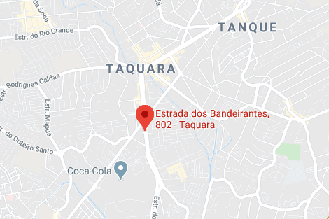

A hamburgueria Kratos foi criada pelo idealizador Weslley através de sua paixão por hambúrgueres.
Com duas unidades situadas no bairro de Bangu, RJ. Paixão, envolvimento e muita pesquisa resultaram em maravilhosos hambúrgueres exclusivos, que fazem de nossos pratos uma experiência inesquecível.
Rua Santa Cecília, 781 - Bangu, Rio de Janeiro Aberto de terça a domingo das 18:00 ás 00:00
(21) 3469-4601
Estrada dos bandeirantes,802 - Taquara, Rio de Janeiro Aberto de terça a domingo das 18:00 ás 00:00
(21) 3328-3525
